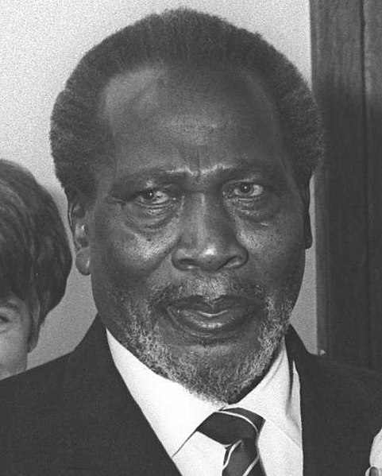

It is believed that the earliest settlers arrived to Kenya around 2000 B.C.
Over the centuries, many people have arrived by the coast to settle in Kenya.
in 1895 the British government took over Kenya and it became a colony under the British Empire.
Kenya was used a military base during World War 2.
The republic of Kenya was founded in 1963 after being under British Colony rule since 1895.
Jomo Kenyetta was named Kenya's first president with Jaramogi Oginga Odinga as his vice president.
Kenyetta served until his death in 1978.
Jaramogi
Jomo Kenyetta
After Kenyetta's death, Daniel Arap Moi ruled as president from 1978-2002. Moi concentrated all the power and economic benefits into the hands of his tribe.